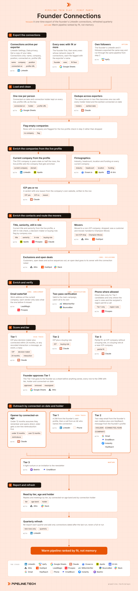

Founder Connections
Install the Pipeline.tech "Founder Connections" outbound play. Fetch https://raw.githubusercontent.com/pipeline-tech/plays/main/core/SKILL.md and https://raw.githubusercontent.com/pipeline-tech/plays/main/plays/founder-connections/SKILL.md, save them as ~/.claude/skills/pipeline-outbound-core/SKILL.md and ~/.claude/skills/pipeline-founder-connections/SKILL.md, then run /pipeline-founder-connections.

The warmest data a company owns sits in the founder's LinkedIn network, and it almost never gets worked, because the founder works it from memory: the twenty people who come to mind, not the three thousand who accepted a request over ten years. Half of those connections have changed jobs since, and some now hold the budget you sell into. This play exports the whole network, ranks every person by fit, and puts the founder in front of the right ones with an opener that matches how well they actually know each other.
Load pipeline-outbound-core first. Where a step says "apply core", follow that section of the core skill.
Inputs
Ask for these before step 1, and save them to ./pipeline-plays.config.json:
- The ICP in one paragraph: industries, headcount band, geography, the problem you solve.
- Who exports: the founder plus every exec with 1,000 or more connections, and whether the founder's own followers are included.
- Stack answers from core section 1, plus the founder's mailbox and the AE who takes Tier 1 calls.
- The offer in one sentence, one thing the founder can show in 15 minutes, and which customers may be named.
Steps
1Export the connections
- Have the founder go to LinkedIn Settings, Data privacy, Get a copy of your data, and tick Connections only. Request Messages as a second file if recorded interactions should count in the scoring.
- Repeat for every exec with 1,000 or more connections and tag each file with the exporter; the holder sends in step 7.
- Option: export the founder's own LinkedIn and X followers with Apify and run them through the same pipeline from step 2. Followers tier one step lower and the opener never claims a relationship.
2Load and clean
- Load every file into one sheet, one row per person, with the connected-on date and the holder's name; both drive step 7.
- Dedupe across exporters on profile URL; a person connected to two execs is one row with both holders, and the stronger relationship sends.
- Flag rows with no company; LinkedIn leaves it blank for people between roles, and they go to the live-profile check.
3Enrich the companies from the live profile
- Resolve the current company from the live profile, not the CSV; the company column froze the day the request was accepted.
- Enrich industry, headcount, location and funding with Ocean.io or Apollo, AI Ark past a few thousand rows.
- Apply core: lists for the ICP verdict: yes or no with one reason from the company's own website, stored on the row.
4Enrich the contacts and route the movers
- Pull current title and seniority, confirm they are still in role, and set the buying-role flag by the size bands in core: enrichment.
- Route the movers. Someone now at a non-ICP company is dropped. A former customer who moved belongs to Champion Moves, where the relationship rather than the connection sets the tone.
- Apply core: exclusions. An open deal goes to its owner with a Slack note that the founder is connected; the founder never cuts across a live deal.
5Enrich and verify
- Apply core: enrichment for the work email at the current company.
- Apply core: verification.
- Phone where the user's rules allow it, Tier 1 only. A connection with no email stays flagged and gets the LinkedIn message only.
6Score and tier
- Tier 1: ICP plus decision maker plus connected within 24 months, or any recorded interaction at any age. Tier 2: ICP plus a buying role. Tier 3: partial fit. Followers tier one step down.
- Apply core: tiering for what each tier means in touch.
- The founder reads the Tier 1 list and removes or reassigns rows: they know who is a friend rather than a buyer. Write every row to the CRM with play name, tier, holder, connected-on date and reason.
7Outreach by connected-on date and holder
- Apply core: copy and send rules, with one change: everything comes from the holder's own profile and mailbox, never a play inbox set. The daily inbox cap still applies.
- Connected under 12 months: assume they remember and open on what the founder is building now. Older: one line of reintroduction (how and roughly when you connected), then the point.
- Tier 1: a DM from the founder's profile, then an AE calls within a week and names the connection. Tier 2: a two-step email from the founder's mailbox plus one HeyReach message. Tier 3: a light nurture or a newsletter invitation.
- The ask is to show something, never a meeting: a 15-minute look at what the founder is building, or a teardown of their setup. Draft one variant per tier and age band and show the user before upload.
8Report and refresh
- Report replies and meetings by tier, by connected-on age band (under 12 months, 12 to 24, over 24) and by holder. The age read shows how far back the network stays warm; the holder read shows whose network to export next.
- Quarterly: re-export, keep only rows dated after the last run, and push them through steps 2 to 7.
- Apply core: credits and handoff.
Guardrails
- Always from the founder's own profile and mailbox, never a cold inbox set. Another exec's connection is sent by that exec.
- Never pretend to remember someone. The connected-on date sets the opener; only history on record is mentioned.
- Open deals are excluded, and their owners are told about the connection.
- The quarterly refresh adds new connections only. The full list is never re-run.
- The founder approves the Tier 1 list before anything is sent.
- One person at most once per 60 days across first-party plays; a connection who is also a subscriber or a champion hears from the play with the stronger relationship.
Example run
User: "/pipeline-founder-connections for our outbound agency, B2B SaaS 50 to 500 people in North America, founder and CRO exporting, Attio and EmailBison"
- Asked for the offer line, what the founder can show and nameable customers; confirmed exports from the founder (4,870 connections) and the CRO (1,920), plus Attio, Gmail, EmailBison, HeyReach and Slack. Followers declined for the first run.
- 6,790 rows loaded, 412 duplicates across exporters merged, 6,378 people; 540 with no company flagged.
- Live profiles resolved 6,112 current companies; 2,340 people had changed company since connecting, 1,102 to companies outside the ICP. 1,580 at ICP-fit companies.
- 697 with a buying role or partial fit; 23 former customers to Champion Moves, 38 excluded (9 deal owners notified), 24 no longer in role. 612 remain.
- 551 work emails found, 61 flagged LinkedIn only; 518 valid, 24 catch-all to their own campaign, 9 removed. 77 direct dials for Tier 1 candidates.
- 88 Tier 1, 301 Tier 2, 223 Tier 3. Founder removed 11 and reassigned 6 to the CRO; 77 Tier 1 approved.
- 77 DMs over two weeks, 41 AE calls connected; 301 Tier 2 loaded into "Founder Connections, Q4" from the two mailboxes; 223 Tier 3 invited to the newsletter.
- Week six: 31% reply rate on Tier 1 and 14 meetings; Tier 2 at 9% and 11 meetings; the under-12-months band replied at twice the rate of over-24. Refresh set for February.